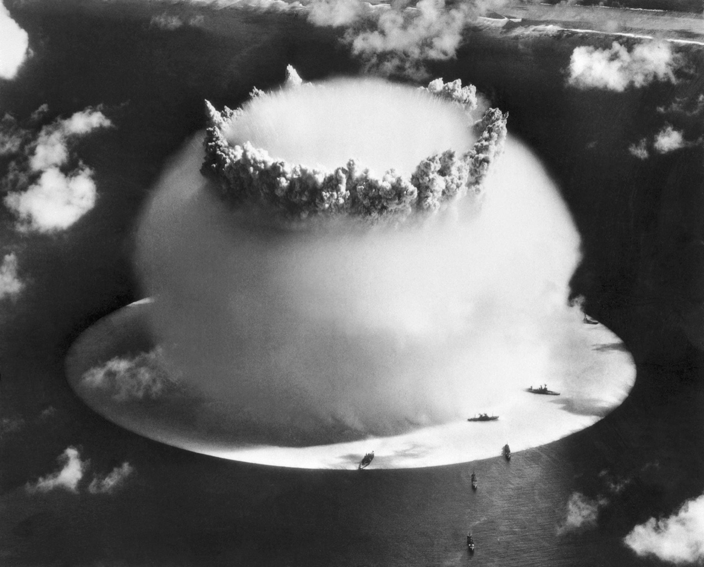
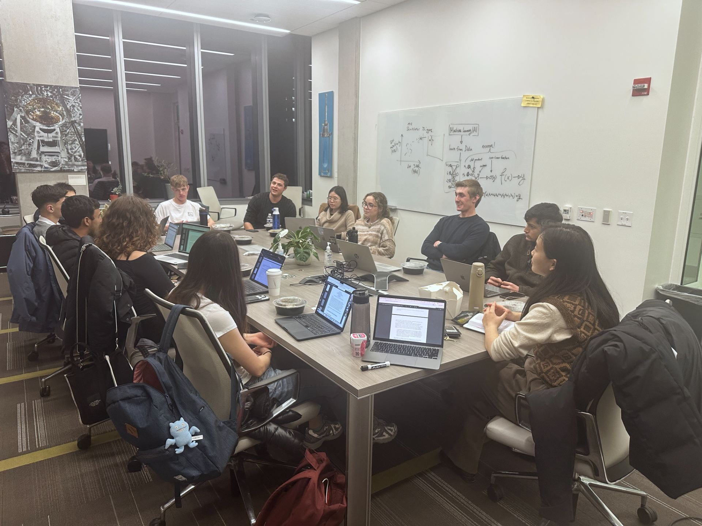

Nuclear Weapons
The world remains just one false alarm, a single person's impulsive decision, and a few minutes from nuclear conflagration and an ensuing nuclear winter. Thousands of nuclear weapons around the world are on hair-trigger alert. Once the button is pushed, the order can't be rescinded, and once launched, the missiles cannot be shot down. Despite many historically documented nuclear "near misses," and a renewed rise in global tensions, nuclear risk mitigation receives little attention from policymakers, researchers, and students alike.

Though the number of nuclear weapons has gone down significantly since the 1980s, the current global stock is still high and rising: as of March 2024, nuclear-armed states possessed a combined total of about 12,100 nuclear weapons. Roughly 3,804 of those are operational, and of those, 2,000 are on "high-alert status" — meaning they stand ready to be launched at any time.
The rise of artificial intelligence and modernization of arsenals present the potential for new kinds of accidents and false alarms as unfamiliar technologies are deployed. While states are not seriously considering giving AI models direct control of nuclear weapons, militaries are actively looking to incorporate the technology into a wide array of applications, including military decision-making and early warning sensors — introducing new failure modes into an already fragile system.
The University of Chicago's connection to this risk area runs deep: the world's first controlled nuclear chain reaction took place under Stagg Field in 1942, and the Bulletin of the Atomic Scientists — creator of the Doomsday Clock — was founded in 1945 by Manhattan Project scientists at UChicago concerned about the technology they had helped create.
Top 10 Things to Know About Nuclear Weapons
Some experts believe the world is at its highest level of nuclear risk since the Cuban Missile Crisis. With Russia's war in Ukraine, China's rapid nuclear modernization, and heightened tensions in the Middle East, the chance of escalation — deliberate or inadvertent — is dangerously high. Here are 10 things to know:
~3,800 operational nuclear weapons exist today, with 2,000 on high-alert status.
As of March 2024, nuclear-armed states possessed a combined total of about 12,100 nuclear weapons. Roughly 3,804 are operational, and of those, 2,000 stand ready to be launched at any time.
Nine states possess nuclear weapons.
The United States, Russia, China, the United Kingdom, France, India, Pakistan, North Korea, and Israel make up the "Nuclear Nine." Nearly all maintain a policy of nuclear retaliation in self-defense; only two have vowed "no first use." The U.S. and Russia hold more than 90% of the global stockpile.
Nuclear winter remains the worst consequence of nuclear weapons use.
Firestorms from detonations over cities could loft soot high into the atmosphere, blocking sunlight and dropping global temperatures by 20–40°F — causing crop failure, famine, and infrastructure collapse. Even an exchange as small as 100 warheads could starve more than 2 billion people.
Very few people are required to authorize a launch.
Despite differing command structures across the nine nuclear powers, launch authority typically rests with a head of state. In the U.S., France, and North Korea, that authority is held solely by one person.
The world has come dangerously close to nuclear war before.
In 1983, Soviet officer Stanislav Petrov disregarded a false satellite warning of incoming U.S. missiles, preventing a retaliatory launch. The Cuban Missile Crisis and the 1983 Able Archer exercise are two more documented "near misses."
China’s rise is disrupting Cold War-era bipolar stability.
With the U.S., China, and Russia now possessing comparably large arsenals, the "three-body problem" makes deterrence calculus and negotiation harder than the bipolar U.S.–USSR dynamic of the Cold War.
Key arms control treaties are expiring, with few replacements in sight.
Treaties including SALT, the CTBT, New START, the JCPOA, and the CFE Treaty have expired or been withdrawn from in recent years, weakening the frameworks — like the NPT — that remain.
Nuclear and conventional weapons systems are increasingly entangled.
The deployment of "dual-use" weapons and shared command, control, and communications infrastructure makes it harder for adversaries to distinguish conventional from nuclear threats — raising the risk that a conventional attack escalates into a nuclear one.
Funding for nuclear risk research is drying up.
Philanthropy invests only about $40–50 million per year globally in mitigating nuclear risk — a number expected to fall further after the MacArthur Foundation, once roughly 30% of the field’s funding, exited in 2024. Governments, by contrast, spent $91.3 billion on nuclear weapons in 2023.
AI is being integrated into nuclear-adjacent military systems.
While states are not seriously considering giving AI direct control of nuclear weapons, militaries are incorporating it into decision-making and early-warning sensors — introducing new failure modes, from automated escalation to false alarms, in an already fragile system.
Our Research Focus
Post-Detonation Interventions
This research area broadens the definition of risk reduction to what may happen if prevention fails. While civil defense and other post-detonation interventions were once seen as morally suspect during the Cold War, this area of inquiry today is better reframed as risk management for a new nuclear era — refusing to prepare for possible failure modes only increases the probability and severity of a failure event itself.
New Approaches to Risk Reduction
Much of the field applies Cold War-era approaches to a modern security climate that looks very different, particularly amid tripolar competition between the U.S., Russia, and China. This area interrogates why current approaches fall flat under modern conditions and develops ones that can work despite a hostile security environment — since risk reduction doesn't always require adversary buy-in.
Updating the Field's Foundational Inputs
The nuclear field often confuses the "politically irrelevant" with the "scientifically resolved." When certain questions fall out of political relevance, the field often stops investigating them — spanning public risk narratives, decision-making, and military planning, as well as hard sciences such as the effects of nuclear war and nuclear winter. This area re-interrogates these assumptions and updates them for modern conditions, identifying where uncertainties lie and where future work is needed.
Nuclear Risk Working Group
A multidisciplinary research group for undergraduate and graduate students, working on individual and collaborative projects surrounding nuclear weapons and global catastrophic risk under the advisory of XLab staff and university faculty. Students research and produce novel, interdisciplinary investigations of understudied topics in nuclear risk, with direct applications to national security, existential risk, and the broader field.
Through the working group, students engage with graduate-level scholars and senior field experts, expand their networks through professional development opportunities, cultivate research and briefing skills through workshops, and collaborate with fellow students. This offers students the chance to develop lines of research they can carry forward into master's and PhD study, or into policy, analysis, consulting, intelligence, diplomacy, and energy careers. Final deliverables are published on XLab's website and shared with the lab's network of policymakers and researchers.

Featured Projects
Assumptions and Uncertainties in Modeling Nuclear Winter
A critical assessment of nuclear winter models and the field’s fuel-load estimates and mechanism assumptions, proposing an actionable research agenda to strengthen scientific understanding through multidisciplinary analysis.
Small Modular Reactors, Proliferation, and the AI Energy Bottleneck
Compares U.S. and Chinese regulatory landscapes for Small Modular Reactors as data-center energy demand outpaces grid capacity, finding U.S. licensing a primary barrier, and offers structural policy recommendations.
Open Source Intelligence Verification for AI Data Centers
Develops a methodology for identifying and monitoring AI data centers globally using satellite imagery and OSINT, building an open-source database aimed at verifying how fast AI infrastructure is being built worldwide.
Reconceptualizing Civil Defense
Revisits civil defense as a class of risk-reduction interventions, arguing that a reconceptualized approach focused on agricultural resilience, stockpiling, and supply-chain stability may offer positive modern-day risk reduction.
Minimum Viable and "Winter-Safe" Deterrence
Explores minimum viable deterrence using a winter-safe threshold to reconstruct sensible force postures for the nuclear nine, based on each state’s security dilemmas and conceptualization of unacceptable cost.
More From Our Fellows
- Kevin Li, “Tripolarity, Resolve, and Nuclear Risk”
- Rhea Kanuparthi, “Nukes and Ladders: India and Pakistan’s Nuclear Evolution”
- Aryan Shrivastava, “Response Inconsistency of Large Language Models in High Stakes Military Decision Making”
- Audrey Weckwerth, “Strait to Catastrophe: The Role of Perceptual Factors in US-China-Taiwan Defense Posture and Nuclear Escalation”
- Simon Siskel, “Deterrence and Deescalation: U.S. Strategies for a Nuclear-Capable Iran”
- Lavinia Cavalet, “To Arm or Not to Arm: An Arctic Dilemma”
- Austin Coffey, “Managing Conflict in the South China Sea”
- James Rosenberger, “Measuring Community Significance and State Vulnerability After Nuclear Winter”
People
Madeline Berzak
Manages the nuclear risk research program at XLab. Madeline holds a bachelor’s in political science and public policy from American University, and a master’s in nonproliferation and terrorism studies from the Middlebury Institute of International Studies at Monterey. She was formerly an open source intelligence analyst at the James Martin Center for Nonproliferation Studies, focusing on North Korea’s nuclear weapons program, and has worked for the Nuclear Threat Initiative and Physicians for Social Responsibility. Madeline also runs Appetites for Risk, a Substack on the relationship between big risks and culture.
Rhea Kanuparthi
Manages the emerging technology research program at XLab. Rhea is a fourth-year at the University of Chicago studying political science and mathematics, and leads technical research projects with XLab’s partner organization, the Wisconsin AI Safety Initiative (WAISI). Her research focuses on the impacts of emerging technology on nuclear strategy, deterrence with mutually assured AI malfunction (MAIM), and shifts in crisis dynamics in South Asia. She has worked with XLab since January 2024, and was a summer research fellow in 2024.
Noah Peters
A research assistant for the nuclear risk program at XLab. Noah is an incoming third-year studying mathematics and economics with a concentration in data science. He worked on the Winter 2026 civil defense project, examining the relationship between civil defense and the probability of nuclear war; his broader interests include political and economic resilience, disaster response, post-nuclear war autarky, and export control regimes.
Bennett Cullison
A researcher and lead on the nuclear winter geoengineering project. Bennett is an incoming fourth-year studying geophysical sciences, with research interests in climate and atmospheric modeling, nuclear winter, and GIS applications. He previously worked on XLab’s nuclear winter research, modeling combustible material by land type to produce more accurate soot estimates.
XLab's Approach
HIGH-LEVEL CONVENING
XLab organized the Nobel Laureate Assembly to Prevent Nuclear War, bringing together the world's foremost experts on nuclear weapons and resulting in a Declaration signed by 129 Nobel Laureates.
POLICY RESEARCH
Fellow-led research on escalation dynamics, arms control, and the intersection of emerging technology (including AI) with nuclear command and control.
PUBLIC PROGRAMMING
Panels and screenings held with partners including the Bulletin of the Atomic Scientists, most recently on the annual Doomsday Clock announcement and a screening of Kathryn Bigelow's A House of Dynamite.
Learn More
Want to work on this?
Our Summer Research Fellowship trains junior researchers in nuclear security and policy.
EXPLORE THE FELLOWSHIP →